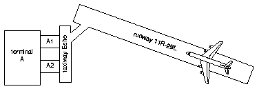
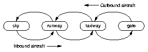

15.1 Goals of the airport application
Throughout this book, we have been developing components for an airport application. This application deals with airports, aircraft, gates, and related objects. Figure 15.1 shows a diagram of a simple airport.
 |
 |
In Figure 15.1, we see a single terminal, A. It has two gates, A1 and A2, a taxiway, Echo, a runway, 11R-29L, and an aircraft approaching the runway.
When landing, an aircraft goes from the sky to a runway to a taxiway to a gate. Figure 15.2 is a state diagram showing these transitions for both inbound and outbound aircraft.
Our first goal for this application is as follows: given a set of incoming aircraft at various positions in the sky, we want to predict which gate each aircraft will use when it arrives, and to estimate the arrival time of the aircraft at the gate. This information is displayed on the Arrivals monitors in an airport.
Our second goal for the application is to provide additional information for the ground crew. We must state the entire path that an incoming aircraft will take, including the runway, the taxiway, and the gate. We must also state the time that an aircraft is expected to be at each point. For example, for an inbound aircraft, we want to display information like the following:
12:30: Aircraft Cardinal at Runway 11R-29L 12:43: Aircraft Cardinal at Taxiway Echo 12:47: Aircraft Cardinal at Gate A2
The application considers departing aircraft as well as arriving aircraft.